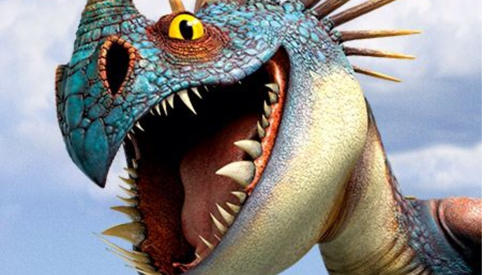
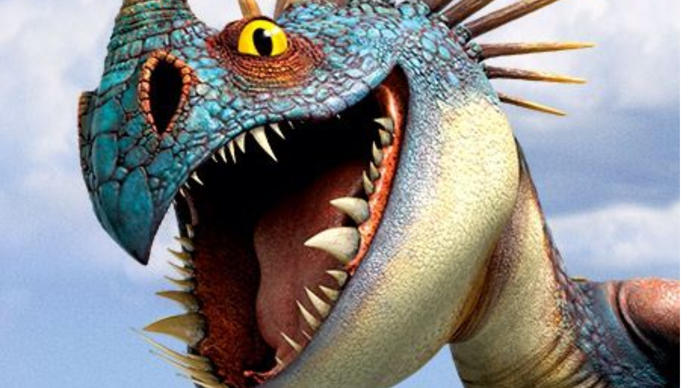

Furia da noite
O Fúria da Noite teve sua primeira aparição no filme, "Como Treinar Seu Dragão". Como ele é um dos principais, aparece em todas as séries e filmes da franquia. A apenas uma Fúria da Noite, que é o único da espécie, Banguela.
Tempestade
Tempestade é o dragão de Camicazi / Astrid. Nos livros ela apareceu pela primeira vez no Guia do Herói para vencer dragões mortais e desde então tem aparecido em cada livro seguinte. No filme, ela é uma grande Nadder Mortal azul e amarela.
Bafo e Arroto
Bafo e Arroto é o Ziperarrepiante de Cabeçadura e Cabeçaquente. Bafo e Arroto são como seus donos, eles têm dificuldade de manter o foco. Cada cabeça atende um ou mira em um alvo. No entanto, ao contrário dos irmãos, eles podem trabalhar juntos para encontrar seus proprietários e irritam-se com as brigas constantes.
Batatão
Batatão é o Gronckle de Perna de Peixe. No filme ela foi mantida presa no Treinamento.
Dente de Anzol
Dente de Anzol é o Pesadelo Mostruoso de Melequento no filme e na série. Nos livros é um dos dragões de Stoico, o Imenso, junto com Bafo de Verme.
Grito da Morte
O Grito da Morte é um dragão enorme considerado raro. O grito da morte também tem um grito poderoso capaz de desorientar os dragões e atordoar os vikings. Um dos poderes do Grito da Morte é o de cuspir bolas de fogo gigantes e lançar espinhos.
Pula Nuvem
Pula Nuvem é uma dragão que aparece no filme ´´Como Treinar Seu Dragão 2``, pertencendo a mãe do Soluço.Ele tem uma grande habilidade de voo ela é semelhante a um morcego ela tem 4 pares de assas e 2 pernas lembrando muito uma aranha ou uma formiga ela é ornivora